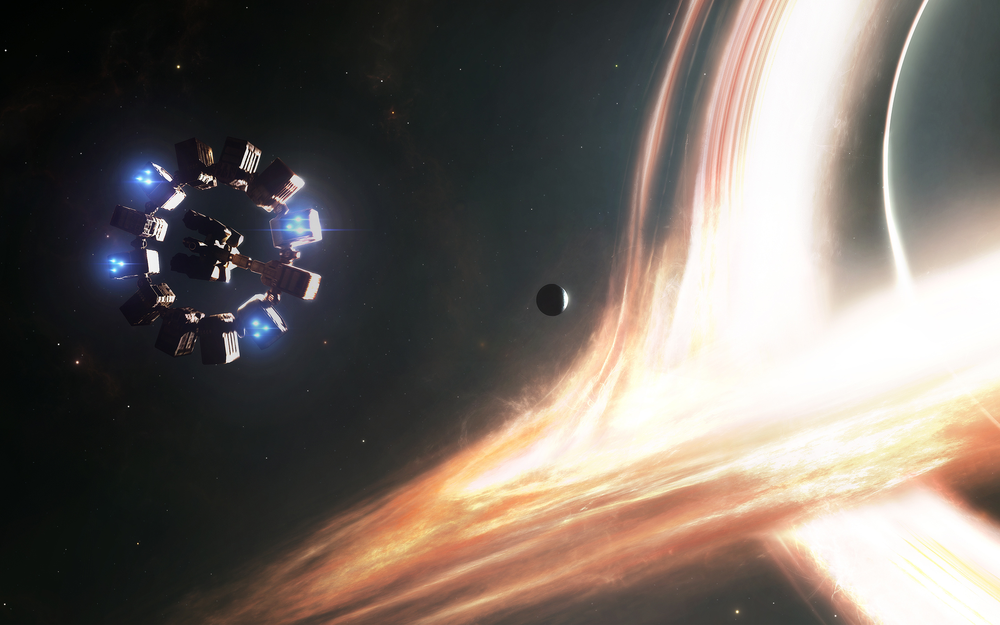
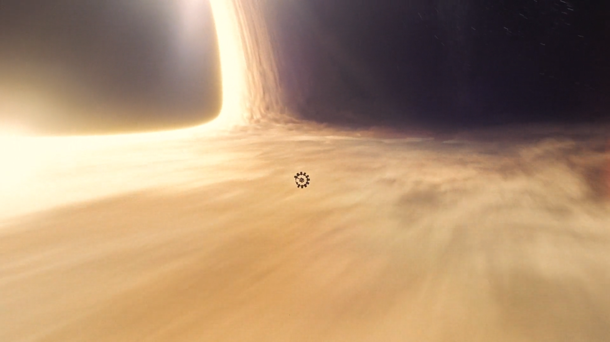
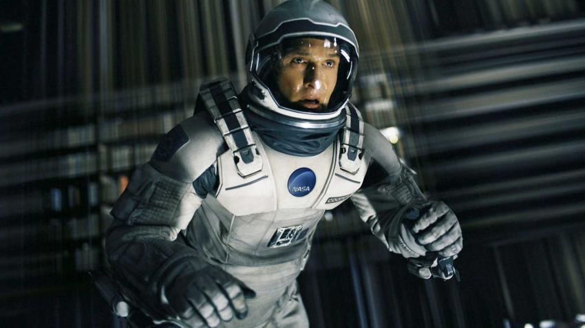

-

Após a confusão com o Dr. Mann, Cooper decide que a melhor opção é utilizar a energia gravitacional do buraco negro Gargantua para tentar catapultar uma parte da nave, com Brand no comando, para o planeta Edmunds. Enquanto isso, ele seria lançado para dentro do buraco negro.
A expectativa era de salvar a cientista e dar a oportunidade dela chegar na última opção de planeta que poderia ser habitável para os humanos.
O cálculo é de que se passariam 51 anos durante a viagem pelo buraco negro. Ou seja, enquanto para Cooper são apenas alguns minutos de emoção, para o resto das pessoas o tempo representa cinco décadas de evolução, o que vemos nas cenas seguintes.
-

Um dos momentos mais emocionantes de Interestelar acontece dentro do buraco negro. O plano de Cooper era: ainda que ele acabe morrendo e TARS destruído, o robô seria capaz de mandar informações valiosas sobre um buraco negro, ajudando os cientistas na Terra a resolver a equação que pode salvar a população.
Porém, ao invés de ser esmagado pela Garagantua, Cooper acaba indo parar dentro de o que os especialistas chamam de Tesseract, que pode ser descrito como uma projeção da vida humana que se passa na quinta dimensão.
Os envolvidos na produção do filme encontraram uma maneira bastante simplificada e quadridimensional para explicar para nós o que acontece dentro desse ambiente, tentando, ao mesmo tempo, manter a fidelidade científica.
-

A projeção em que ele fica "preso" é a estante de livros do quarto de Murphy, que ele usa para tentar mandar uma mensagem para a filha - e, sim, são as mensagens que o "fantasma" manda para ela no começo de Interestelar. Ou seja, ele próprio estava mandando uma mensagem para o Cooper do passado não ir para a missão.
De acordo com TARS, os dois foram salvos por "eles", que criaram de uma maneira tridimensional um universo da quinta dimensão para que Cooper entendesse e se comunicasse com a filha. "Eles" são uma versão futura dos humanos que já encontraram as respostas e conseguem navegar em todas as cinco dimensões.
A projeção foi criada para que Cooper pudesse repassar informações importantes para a filha, que seriam a chave para salvar a humanidade. Após várias tentativas de mudar o passado, TARS comenta que eles o trouxeram para solucionar o futuro. Assim, ele começa a passar as informações necessárias para a filha.
Depois disso, a projeção começa a desmoronar, já que havia servido ao propósito criado por "eles".
-

Com as informações e os dados enviados do buraco negro, Murphy encontrou uma maneira de criar uma colônia espacial para os humanos sobreviverem fora da Terra, que é onde Cooper vai parar. O local foi batizado de Cooper Station, uma homenagem de Murphy para o pai.
Ao acordar, ele tem a oportunidade de se despedir da filha, que já era uma mulher idosa e a beira da morte, mas fiocu hibernando a espera do pai para poder se despedir. Murphy, então, passa para Cooper as coordenadas para ele ir buscar Brand.
-

As cenas finais de Interestelar mostram Cooper fazendo todos os preparativos para ir encontrar Brand. A cientista, por sua vez, está em Edmunds, mas o responsável por investigar aquele planeta já havia morrido faz tempo.
Ela tira o capacete e descobre que é possível respirar em Edmunds, comprovando que o planeta é habitável e pode se tornar a casa dos humanos. Para esperar por Cooper, estima-se que ela tenha hibernado em uma das máquinas da NASA, mantendo-se com a mesma idade quando Cooper a encontra.
Após toda essa explicação, vale a pena reassistir Interestelar com outros olhos!